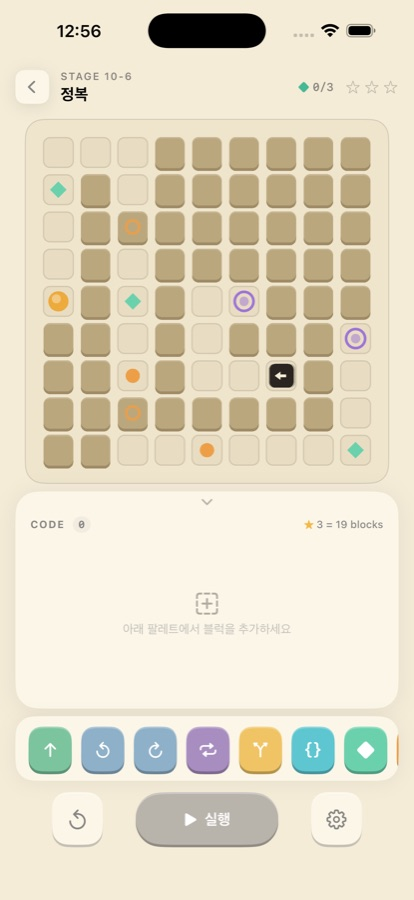
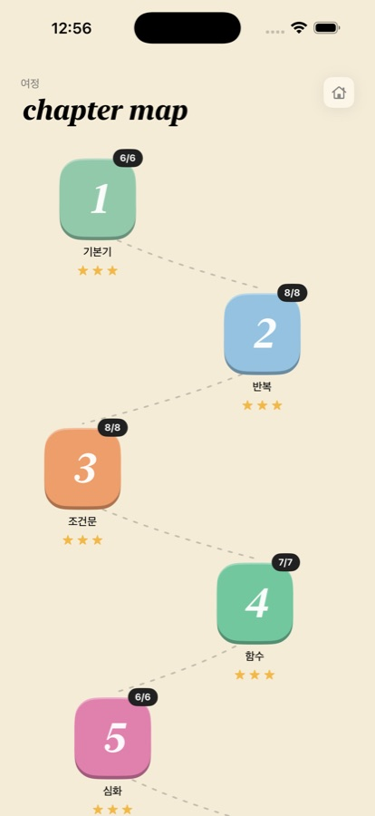

출시 준비 중 iOS · iPadOS · macOS · 개인 프로젝트
Bloccode
아이소메트릭 2.5D 코드 블록 퍼즐 게임


플레이어가 코드 블록을 조립해서 캐릭터를 맵 위에서 움직이게 하는 퍼즐 게임입니다. 스테이지를 풀어 가며 순차 실행·반복문·조건문·함수 개념을 자연스럽게 익히도록 설계했고, 현재 App Store 출시를 준비하고 있습니다.
주요 기능
- 이동·회전부터 반복·조건·함수, 보석 획득·스위치 작동까지 9종 코드 블록을 제공하고, 반복·조건 블록은 서로 중첩 가능
- 10개 챕터, 69개 스테이지로 개념을 하나씩 도입하는 커리큘럼 구성
- 보석·스위치와 문·포탈 기믹, 그리고 더 적은 블록으로 풀수록 높아지는 별점 시스템
- 하나의 SwiftUI 코드베이스로 iPhone·iPad·Mac 화면 폭에 맞춘 레이아웃 제공, 라이트/다크 모드 대응
구현 포인트
- View(SwiftUI) – ViewModel – Service/Model 계층에 SpriteKit
GameScene을 분리해, 맵·캐릭터 렌더링과 게임 로직을 독립적으로 관리 - 스테이지를 JSON으로 정의해 코드 수정 없이 콘텐츠를 추가할 수 있고, 기믹 필드는 옵셔널로 두어 기존 스테이지와 호환
- 실행 중인 블록을 인덱스 경로(
[Int])로 추적해, 중첩된 블록 안에서 실패해도 정확히 어느 블록에서 막혔는지 표시 - 별점은 컨테이너 블록을 제외하고 실제 동작 블록만 재귀적으로 세어 계산
GameViewModel을@MainActor로 격리하고, 클리어 기록과 별점은 SwiftData로 저장- 블록 모델, 실행 엔진, 스테이지 데이터 무결성을 XCTest 단위 테스트로 검증
개발 방식
- Claude Code로 멀티 에이전트를 구성해 개발과 리팩토링을 진행 (XcodeBuildMCP, Apple 공식 Xcode MCP, Context7)
- 리팩토링은 UI/UX와 동작을 전혀 바꾸지 않고 내부 구조만 개선하는 조건으로 진행
- 항목별 승인을 거쳐 원자적 커밋 단위로 반영
문제 해결 과정
-
챕터 해금 버그 → 메타데이터를 단일 원본으로 통합
조건을 충족해도 챕터가 열리지 않았습니다. 챕터 메타데이터가 4~5곳에 하드코딩되어 값이 어긋난 것이 원인이어서,
ChapterCatalog한 곳에서만 정의하고 화면·뷰모델·서비스가 모두 여기서 조회하도록 바꿨습니다. 이후 챕터를 5개에서 10개로 늘릴 때 이 파일 하나만 수정했습니다. -
중첩 블록 하이라이트 오류 → 인덱스에서 경로 기반으로 전환
블록이 중첩되면 실행 중인 블록이 엉뚱한 행에 표시됐습니다. 정수 인덱스 하나로 위치를 추적해 자식과 최상위 블록의 인덱스가 충돌한 것이 원인이어서, 실행 위치를 경로 배열(
currentBlockPath)로 바꾸고 재귀 실행 함수가 부모 경로를 넘겨받도록 했습니다. -
macOS에서만 드래그 불가 → RunLoop 모드 차이
처음에는 제스처 충돌로 보고 우선순위를 올렸지만 해결되지 않았습니다. 다시 추적해 보니 macOS는 마우스를 누르는 동안 이벤트 트래킹 모드로 전환되어 롱프레스 타이머가 돌지 않았고, macOS에서만 타이머를
.common모드로 등록해 해결했습니다. -
69개 스테이지 정답 검증 → 시뮬레이터와 자동 테스트
손으로 검증하다 풀 수 없는 스테이지가 섞여 들어갔습니다. 게임 실행 규칙을 옮긴 파이썬 시뮬레이터로 정답 도달 여부와 블록 수 기준을 통과한 스테이지만 생성하도록 했고, 유닛 테스트 54개와 UI 테스트로 회귀를 자동으로 잡습니다.
-
멀티플랫폼 레이아웃 깨짐 → 기기 종류가 아닌 화면 조건으로 분기
iPad 온보딩에서 옆 페이지가 삐져나오고 iPhone 가로모드에서 콘텐츠가 잘렸습니다. iPad는
GeometryReader로 페이지 크기를 명시하고, iPhone 가로모드는 "사용 가능한 높이"를 기준으로 분기해 일러스트를 축소했습니다.